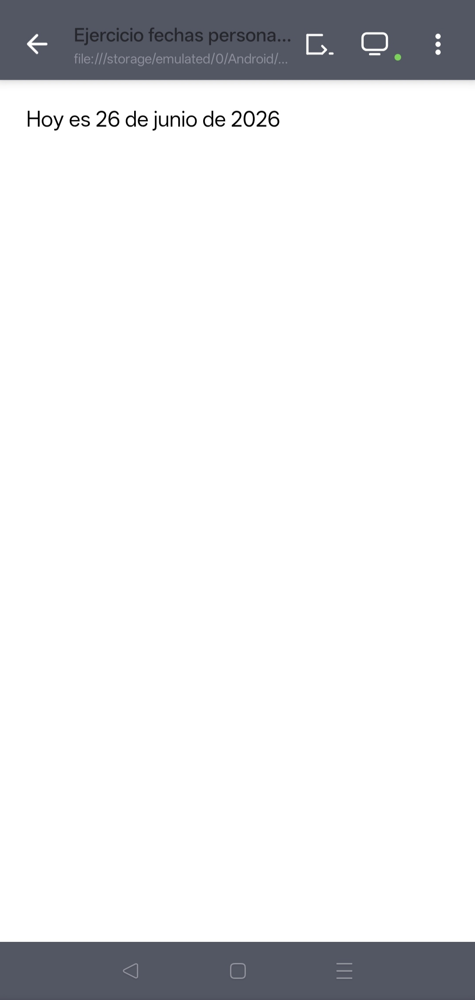

Formulario de Registro
En esta práctica se desarrolla un formulario de registro utilizando HTML y CSS para capturar información del usuario como nombre, domicilio, correo y contraseña.

El formulario está construido con HTML utilizando etiquetas como input y label para capturar información del usuario de forma estructurada.
El CSS se utiliza únicamente para mejorar la presentación visual del documento, aplicando colores, tipografía y organización del contenido.
Esta práctica permite comprender la estructura básica de un formulario web sin depender de elementos visuales complejos.
Se logró comprender la creación de formularios básicos en HTML y su estilización con CSS, lo que sirve como base para proyectos más avanzados con bases de datos.